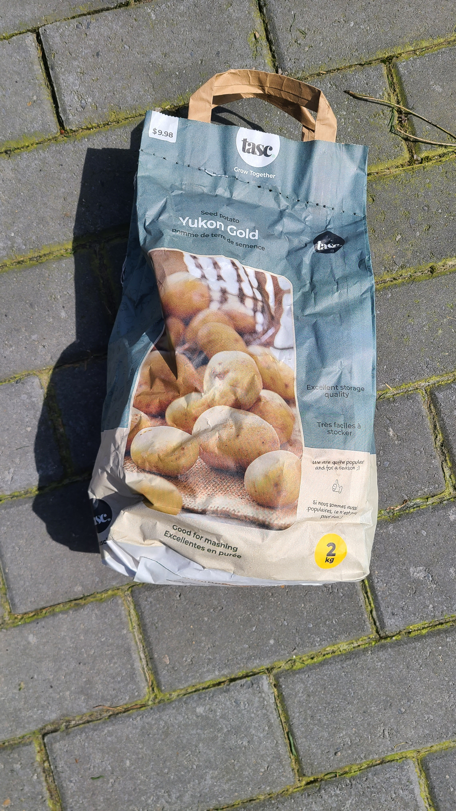
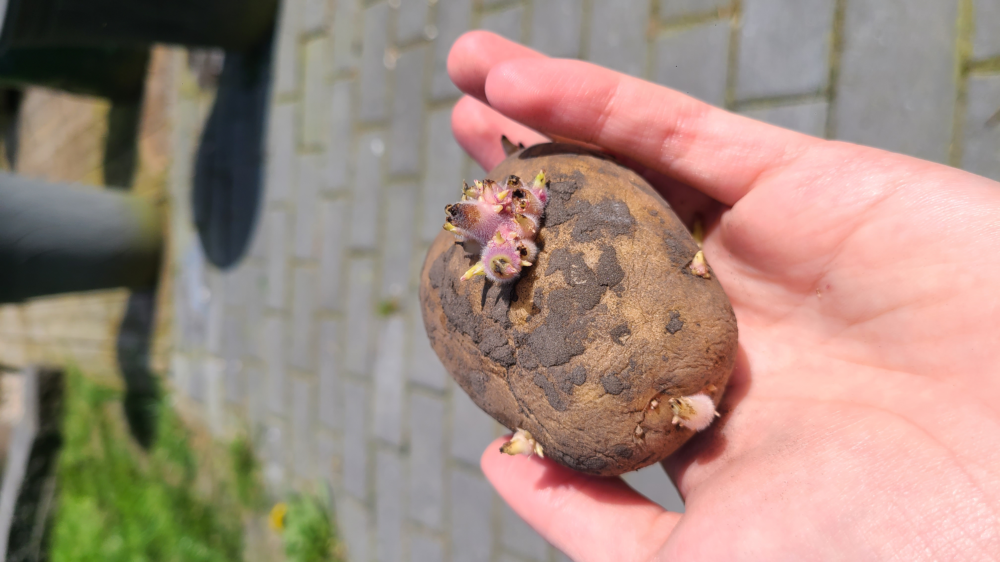
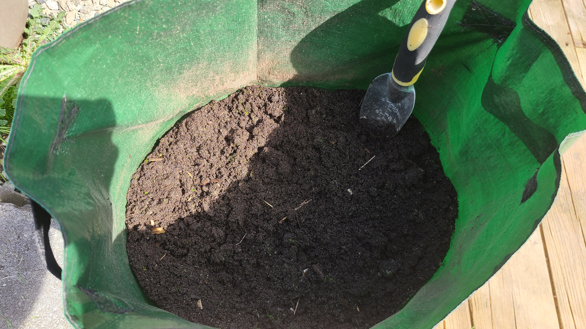
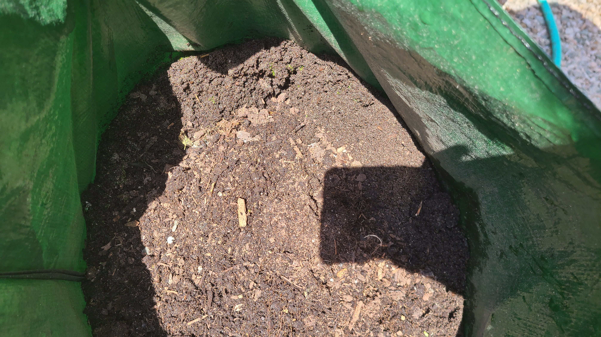
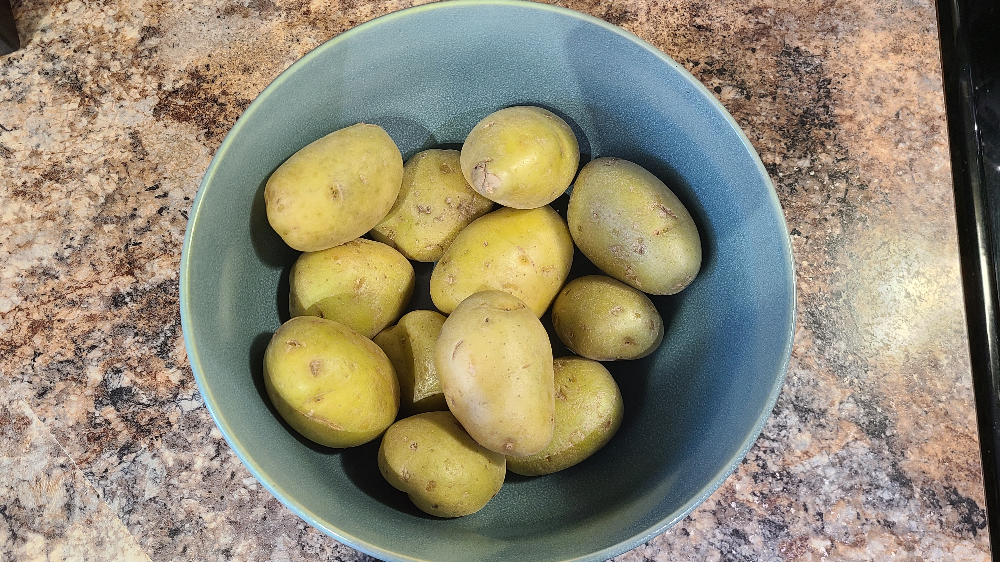

Step 1: Choose Your Potatoes
- Buy certified seed potatoes from a garden center or online.
- Varieties: Yukon Gold, Red Pontiac, Russet Burbank, etc.
- Avoid using store-bought potatoes they may be treated with growth inhibitors or carry disease.

Step 2: Sprout And Cut The Potatoes (Optional)
- Cut up bigger potatoes into smaller pieces that have 1-2 eyes (sprouts and let dry in a cool dry place for 1-2 days).
- Called "chitting" place seed potatoes in an egg carton or tray in a bright, cool area.
- Let them sprout for 1-2 weeks before planting.
- Ideal for getting an early start in cool climates.

Step 3: Prepare the Soil
- Potatoes love loose, well-draining, slightly acidic soil
- Mix in compost.
- Avoid soil where you have recently grown tomatoes, peppers, or eggplant

Step 4: Plant the Potatoes
In a garden bed or raised bed:
- Dig trenches 4-6 inches deep, spaced 12-18 inches apart.
- Place potato pieces cut side down, eyes up, 12 inches apart.
- Cover with 3-4 inches of soil.
In containers or grow bags:
- Fill with 4 inches of soil, place potatoes, cover with 3-4 inches more.
- As plants grow, keep adding soil to "hill up" the stems.
Step 5: Water & Wait
- Keep the soil consistently moist, but not waterlogged.
- Water more during hot, dry periods.
- Avoid watering leaves to prevent fungal issues.
Step 6: Hill the Plants
- When plants are 6-8 inches tall, mound soil or mulch around the base.
- Repeat every few weeks as they grow.
- This prevents tubers from being exposed to sunlight (which turns them green and toxic).

Step 7: Harvest Time!
- Wait until foliage turns yellow and dies back.
- Use a trowel to gently dig around and lift the tuber.
- Do not forget wash your potatoes!
